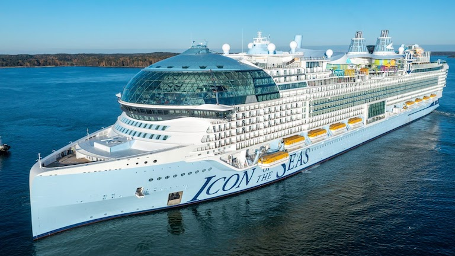

Icon of the Seas


- Rok ukończenia: 2023
- Koszt: 1,86 miliarda euro
- Typ statku: pasażerski
- Pojemność: 248,663 GT
- Długość: 364,75 metrów
- Szerokość: 48,47 metrów
Icon of the Seas to największy statek pasażerski na świecie. Należy do klasy statków Icon class oraz linii Royal Caribbean International, jest używany do rejsów po Karaibach, a jego port macierzysty znajduje się w Miami. Potrafi pomieścić maksymnie 7600 pasażerów, a jego załoga liczy około 2350 osób. Jest podzielony na siedem dzielnic:
- Aquadome: teatr wodny pod szklaną kopułą na szczycie statku.
- Thrill Island: największy park wodny na morzu.
- Chill Island: strefa relaksacji.
- The Hideaway: strefa tylko dla dorosłych na tyle statku.
- Surfside: dzielnica zaprojektowana z myślą o rodzinach z dziećmi.
- Central Park: ogród leżący w środku statku.
- Royal Promenade: centrum statku zawierające sklepy, kluby i restauracje.